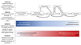

outbreak

Definition: In epidemiology, an outbreak is a sudden increase in occurrences of a disease when cases are in excess of normal expectancy for the location or season. It may affect a small and localized group or impact upon thousands of people across an entire continent. The number of cases varies according to the disease-causing agent, and the size and type of previous and existing exposure to the agent. Outbreaks include many epidemics, which term is normally only for infectious diseases, as well as diseases with an environmental origin, such as a water or foodborne disease. They may affect a region in a country or a group of countries. Pandemics are near-global disease outbreaks when multiple and various countries around the Earth are soon infected.
Source: Wikipedia
Wikipedia Page (Something wrong with this association? Let us know.)
Wikidata Page (Something wrong with this association? Let us know.)